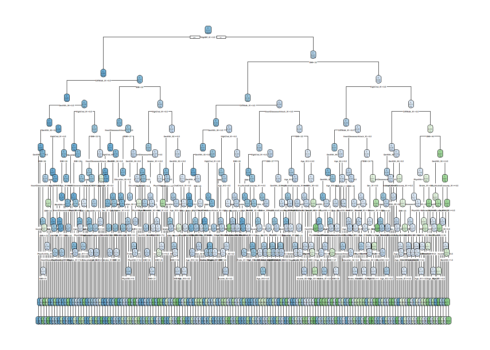

As we saw it in the EDA analysis, there are several patho-physiological (High blood pressure, high cholestoral, difficult to walk, aging), social-economic (Education and Income) and life-style factors (achohol consumption) associated with occurrence of diabetes. It is not surprising, given diabetes arise from the inability of body to deal with the metabolism of sugar, which becomes readily available in modern daily life, in contrast to the environment where homo sapiens were evolutionized and refined, where food was in scarcity. However, there is no single factor that could explain more than 30% of diabetes incidence. Here we would like to create a model to further characterize the relationship between the incidence of diabetes and its predictors quantitatively.
We start out by dividing our data set into training and testing set in a 70/30 divide.
library (tidyverse)
Warning: package 'ggplot2' was built under R version 4.3.3
Warning: package 'tidyr' was built under R version 4.3.3
Warning: package 'readr' was built under R version 4.3.3
Warning: package 'dplyr' was built under R version 4.3.3
Warning: package 'stringr' was built under R version 4.3.3
Warning: package 'lubridate' was built under R version 4.3.3
── Attaching core tidyverse packages ──────────────────────── tidyverse 2.0.0 ──
✔ dplyr 1.1.4 ✔ readr 2.1.5
✔ forcats 1.0.0 ✔ stringr 1.5.1
✔ ggplot2 3.5.1 ✔ tibble 3.2.1
✔ lubridate 1.9.3 ✔ tidyr 1.3.1
✔ purrr 1.0.2
── Conflicts ────────────────────────────────────────── tidyverse_conflicts() ──
✖ dplyr::filter() masks stats::filter()
✖ dplyr::lag() masks stats::lag()
ℹ Use the conflicted package (<http://conflicted.r-lib.org/>) to force all conflicts to become errors
Tree models provide very intuitive and easy-to-interpret modeling and incorporates the contribution of different predictors. Tree-based model split up the space in the predictor into different segments, each neighbouring predictor space could have wildly different outcome.
Specifically with this project, the goal of the decision tree is to predict the subjects’ diabetic status (whether they are diabetic or not) through the values of predictors. Compared with the linear regression model, which provides output through sometimes complicated formula, the decision tree used a binary decision style that directs the user to make prediction in a step-by-step fashion. Depending on the property of the outcome,the decision tree model comprises both regression tree (when outcome is numeric) and classification tree (when outcome is categorical). Here because the outcome: Diabetes_binary is a categorical variable, we have to fit this to a classification tree model.
We could start building the recipe for the classification tree model using the parsnip package.
diabetes_clstr_rec <-recipe (Diabetes_binary ~ ., data = diabetesdata_train) |>step_dummy(all_factor_predictors())
Forgot to mention another advantage of the tree model is no need to include interaction terms, because the tree account for the interaction itself. Now we could set the model and engine. There are three tuning parameters for us to tune: 1) tree_depth: Tree Depth (type: integer, default: 30L) 2) min_n: Minimal Node Size (type: integer, default: 2L) 3) cost_complexity: Cost-Complexity Parameter (type: double, default: 0.01) If we want to use CV to choose one of these, we can set its value to tune() when creating the model. Let’s use tree_depth and cost_complexity as our tuning parameters and set our min_n to 50.
In the case of decision_tree() we also need to tell tidymodels whether we are doing a regression task vs a classification task. This is done via set_mode().
Now we can use tune_grid() on our diabetesdata_5_fold object. We just need to create a tuning grid to fit our models with. To reduce our computation burden, I will set the search for cost complexity and tree depth to a 4x4 level grid. In addition in order to accelerate calculation I enabled parallel calculation by using 6 cores together using the registerDoParallel() command.
In the fitting results, we chose the combinations with least log loss. From the grid-based computation, we computed that the best combination of cost complexity and tree depth is c (0.0000000001, 10). It looks like a minimum cost complexity and a moderately big tree depth.
The function select_best() could also be used to select the lowest log loss.
Warning: labs do not fit even at cex 0.15, there may be some overplotting

This is a user-friendly classification tree model, albeit it has For example, if you have high blood pressure, BMI higher than 32, high blood cholestrol level, have difficulty to walk and bad general health, experienced heart disease or heart attack and had even experienced stroke, you will have very high chance of getting diagnosed with diabetes.
To sum up, there are several advantages of using tree as the prediction model: 1) Tree models are simple to understand and easy to interpret output. Even with the tree model of 10 layers, users could follow simple guidance to predict individual’s diabetic status. 2) Predictors don’t need to be scaled. That makes the results even more predictable. 3) No need to consider the interaction between variables. 4) No need to select variables, tree models could select useful variable by themselves.
At the same time we need to bear in mind there are several drawbacks in the simple tree model as well. 1) Small changes in data can vastly change tree. 2) Simple tree model used a greedy algorithm that only looks at one step forward. With this setting it is possible the local best solution could be different from the global best solution. 3) Need to prune or use CV to determine the model. Here we used cross validation to figure out the optimal size of the tree, which could take quite some time for big data sets.
To overcome the drawbacks, we used emsembled methods to reduce the variation of the tree models. One way to do it is through bagged tree model. Bagged tree model is basically to build many trees based on bootstrapped samples, and then average the trees to get a final tree. As we learned in the statistics course the variation of stats from averaged samples are often much smaller than the variations of stats from samples themselves, it is possibly truth as in the result of the tree model as well. The idea of random forest tree models were initially based on the bagged tree models.
Fitting the model using the random forest method.
Random forest model also used averaged trees from bootstrapped samples. In addition, to avoid the impact of single or a small number of “strong” predictors, random forest randomly picked up predictors when building trees. Because the presence of one or a small number of strong predictors will direct trees towards one specific way, it will significantly increase variance. It seems random forest have somewhat alleviate this problem. Whether random forest works in our specific data set still needs to be compared with single tree method. Now let’s work on the random forest model.
I have heard about that random forest model takes generally a long time to run, so I decided to adpot several strategies to avoid that. 1) Randomly select 20% of my data set from the index of rows and tune the number of predictors to run based on this data set. 2) Setting up a monitor to know the progress of computing.
First we will randomly select 20% of my data set.
set.seed(123) # For reproducibilitydiabetesdata_sample <- diabetesdata |>sample_frac(0.2)diabetesdata_5_fold_sample <-vfold_cv(diabetesdata_sample, 5)
We could keep the previous recipe, and then we tune the grid to get the number of variables. In the set_engine function we could also set argument verbose to TRUE to allow monitor of the progress.
With the new random forest work flow, we could implement this on our sample CV fold data. Here we used control = control_grid (verbose =TRUE) option to enable the monitoring of this process.
library (progress)
Warning: package 'progress' was built under R version 4.3.3
library (ranger)
Warning: package 'ranger' was built under R version 4.3.3
Ultimately we could refit the random forest with our best parameters on the entire data set. To speed up the process, try implement multicore processing to enable parallel computation, although it is of best practise to use parallel computing at grid stage.